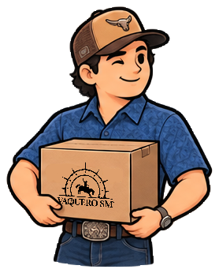
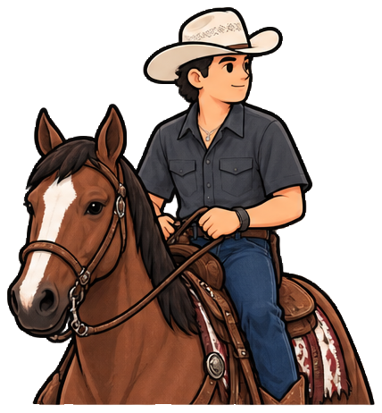
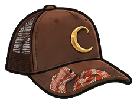
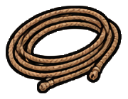
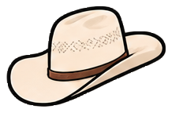
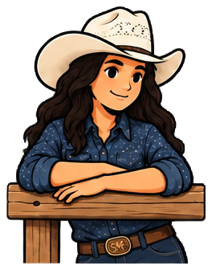
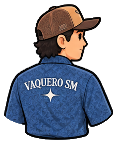
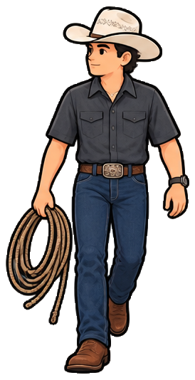
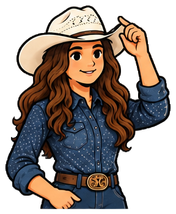

Vaquero SM
Etapa inicial de integración y levantamiento

La primera etapa del proyecto tiene como objetivo conocer y documentar la operación actual de Vaquero SM, preparar la información existente y establecer las conexiones necesarias para comenzar el desarrollo del nuevo sistema.
El nuevo sistema será desarrollado alrededor de los procesos reales del negocio, conservando lo que actualmente funciona y mejorando principalmente la captura de mercancía, el control de inventario, la operación del punto de venta y la conexión con la tienda en línea.
La implementación será progresiva: el sistema actual continuará funcionando durante el desarrollo y las primeras pruebas, evitando afectar la operación diaria.

más rápida
y confiable

hecho a su medida

sincronizada
1Información requerida de WooCommerce
La tienda en línea actual continuará operando y siendo administrada por el proveedor responsable de la página. ProcesaLab únicamente desarrollará la integración necesaria para comunicar WooCommerce con el nuevo sistema.
Acceso temporal al administrador de WordPress/WooCommerce
El acceso será utilizado para revisar la estructura actual de productos, variantes, inventario e integraciones.
Credenciales de WooCommerce REST API
Se generará una conexión específica para el nuevo sistema, que permitirá consultar y sincronizar información sin requerir acceso permanente al administrador de WordPress. La conexión permitirá trabajar con:
- Productos
- Variantes
- Tallas y atributos
- SKU y códigos existentes
- Precios
- Existencias
- Pedidos realizados en la página
- Estados de pedidos
- Información necesaria para sincronización de inventario
Las credenciales serán almacenadas de manera segura y no serán incluidas directamente en el código fuente.
Exportación completa del catálogo
Se solicitará una exportación CSV del catálogo actual para analizar productos, variaciones, categorías, atributos, SKU, precios, existencias e información adicional disponible.
Revisión de configuración
Durante el acceso temporal se documentará la forma actual de administrar inventario, la configuración de productos variables, el manejo de tallas y colores, los plugins relacionados con WooCommerce, las integraciones y webhooks existentes, y la configuración relevante del sistema.
No se realizarán modificaciones importantes a la página durante esta etapa.
2Información requerida del punto de venta actual — SICAR

El sistema actual será utilizado como referencia para entender los procesos que Vaquero SM ya utiliza diariamente y como fuente para la migración inicial.
Exportación completa del catálogo / inventario
Preferentemente en Excel y sin modificar el archivo generado por el sistema. Se buscará obtener:
- Código de barras
- Código interno
- Descripción
- Marca
- Modelo
- Categoría
- Talla
- Color
- Costo
- Precio de venta
- Existencia
- Proveedor
Actualmente se estima que el archivo contiene aproximadamente 15,000 registros. No será necesario volver a etiquetar la mercancía existente: un producto identificado hoy en SICAR con determinado código podrá ser identificado por exactamente el mismo código dentro del nuevo sistema.
Revisión de los procesos actuales
ProcesaLab realizará un levantamiento de la forma en que Vaquero SM utiliza actualmente el sistema. Se revisarán principalmente:
- Alta de productos
- Alta de mercancía
- Creación de códigos de barras
- Impresión de etiquetas
- Venta en caja
- Tickets
- Apertura y cierre de caja
- Cortes
- Entradas y salidas de inventario
- Cambios y devoluciones
- Cancelaciones
- Apartados y abonos
- Descuentos y promociones
- Clientes
- Proveedores
- Compras
- Usuarios y permisos
- Reportes utilizados actualmente
El objetivo no será copiar SICAR función por función, sino identificar las herramientas que realmente utiliza Vaquero SM y desarrollar una alternativa adaptada a su operación.
3Análisis y preparación de información
Una vez obtenidas las exportaciones de SICAR y WooCommerce, ProcesaLab realizará un análisis y limpieza de la información. Uno de los principales trabajos será identificar productos que hoy aparecen como registros independientes pero corresponden al mismo modelo.
Cada variante conserva su código de barras correspondiente.
También se identificarán:
- Productos duplicados, códigos duplicados y productos sin código
- Diferencias de nombres y variantes que no puedan agruparse automáticamente
- Productos existentes en SICAR pero no en WooCommerce, y viceversa
- Diferencias de inventario entre ambos sistemas
Los casos que no puedan determinarse con suficiente seguridad serán separados para revisión en conjunto con Vaquero SM.
4Creación del catálogo central
Una vez organizada la información, se construirá la estructura central del nuevo sistema.
Esto permitirá que cada tipo de producto maneje sus propios atributos:
| Tipo de mercancía | Atributos |
|---|---|
| Botas | Marca + modelo + color + talla |
| Ropa | Marca + modelo + color + talla |
| Sombreros | Marca + modelo + color + medida / talla |
| Accesorios | Marca + modelo + características correspondientes |







La estructura será flexible para incorporar nuevos tipos de mercancía posteriormente.
5Mejora del proceso de captura de mercancía
Uno de los principales objetivos del nuevo sistema será reducir el tiempo necesario para ingresar mercancía. En lugar de capturar individualmente cada talla de un mismo producto, se buscará un flujo continuo:
Etiquetas personalizadas
El sistema podrá generar etiquetas con logo de Vaquero SM, producto, marca/modelo, talla, precio, código de barras y número de código.
Los códigos existentes provenientes de SICAR se respetarán.
6Primera conexión con WooCommerce
La integración se realizará progresivamente, en tres etapas.
Solo lectura
El sistema únicamente consultará WooCommerce: pedidos, ventas online, productos vendidos, variantes, precios, estados y existencias. Permite comprobar la conexión sin modificar la tienda.
Relación de productos
Se establece la correspondencia SICAR ↔ nuevo sistema ↔ WooCommerce. No dependerá del nombre del producto, sino de identificadores específicos para evitar errores.
Sincronización
Validada la información, se comienza a probar la sincronización de inventario en ambos sentidos.
El objetivo final será mantener un inventario centralizado entre las ventas físicas y las ventas de la página.
7Desarrollo inicial del punto de venta
Paralelamente a la integración se comenzará a desarrollar el nuevo punto de venta. La primera versión se concentrará en los procesos indispensables:
- Lectura de códigos de barras
- Búsqueda de productos
- Productos y variantes
- Inventario
- Registro de ventas
- Formas de pago
- Tickets
- Caja
- Cortes
- Usuarios
- Movimientos de inventario
- Historial y trazabilidad
El sistema será diseñado desde el inicio considerando la futura operación de nuevas sucursales, aunque inicialmente se implemente en la sucursal actual.
8Pruebas en paralelo con SICAR

SICAR no será eliminado inmediatamente. Cuando la primera versión sea funcional, ambos sistemas operarán durante un periodo de prueba.
No será necesario imprimir dos códigos diferentes.
Durante esta etapa se compararán ventas, productos, existencias, movimientos, cortes de caja, devoluciones, cancelaciones y cualquier diferencia detectada.
El objetivo será comprobar con operaciones reales que el nuevo sistema produce resultados consistentes antes de convertirlo en el sistema principal.
9Implementación progresiva
Posteriormente, el sistema quedará preparado para incorporar la segunda y tercera sucursal conforme avance el crecimiento de Vaquero SM.
10Seguridad de la operación
Durante la etapa inicial:
El objetivo es que el desarrollo del nuevo sistema no interrumpa la operación actual de Vaquero SM.
✓Resultado esperado de la etapa inicial
Al concluir esta primera etapa se contará con:
A partir de esta base se continuará desarrollando el sistema hasta poder operar en paralelo con SICAR y posteriormente realizar una migración progresiva y controlada.
★Personajes de marca — Vaquero SM
Set de ilustraciones desarrollado con la identidad de Vaquero SM. Están pensadas para el punto de venta, la tienda en línea, etiquetas, empaques, redes sociales y material en sucursal — de modo que el sistema y la comunicación se sientan parte de la misma marca.
 A caballo con lazo
A caballo con lazo Saludo · bienvenida
Saludo · bienvenida
Camisa de marca En el corral
En el corral
Con lazo · caminando
Vaquera · sombrero Bolsa de viaje
Bolsa de viajeUso sugerido: los avatares funcionan bien en el punto de venta y notificaciones; las escenas con caja y bolsa, en empaques y envíos; los objetos (bota, sombrero, cinturón, hebilla) como iconografía de categorías dentro del catálogo.
ProcesaLab × Vaquero SM
Tecnología desarrollada alrededor de la operación real del negocio.